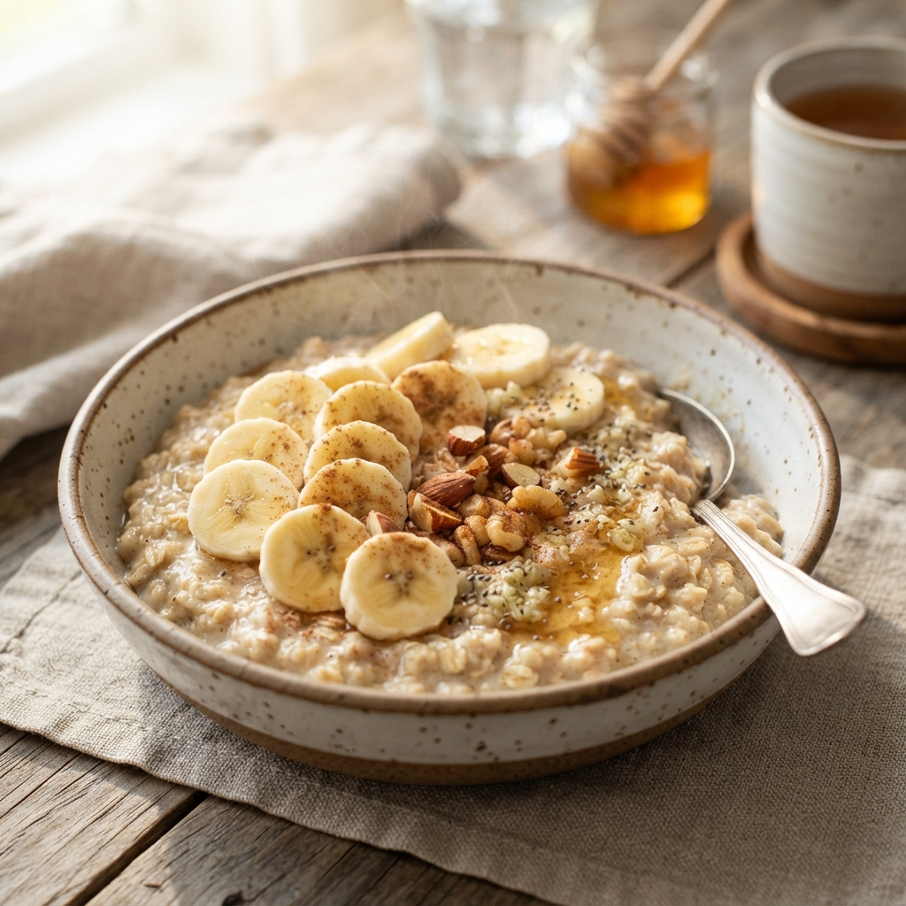
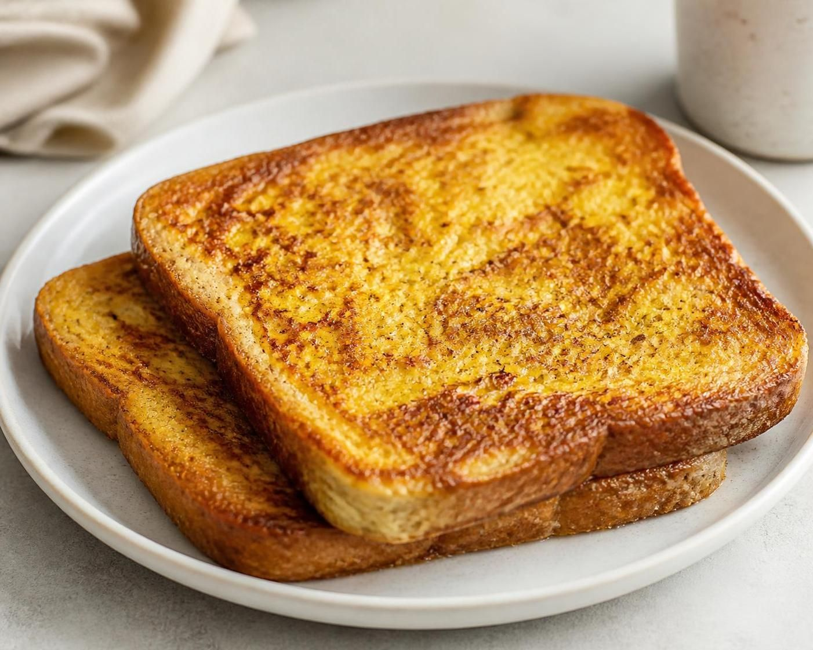
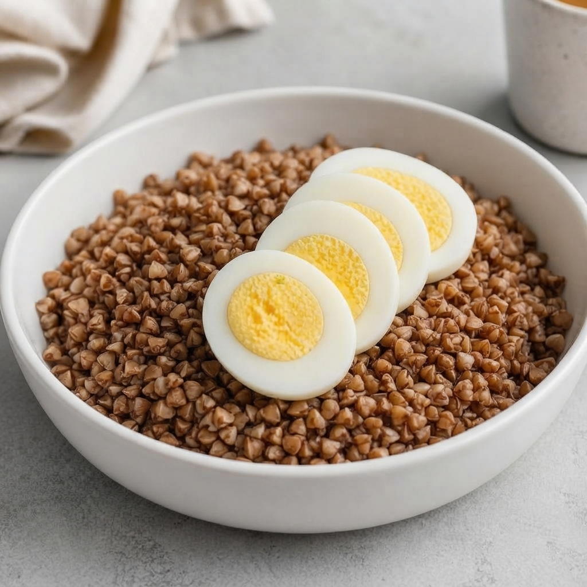
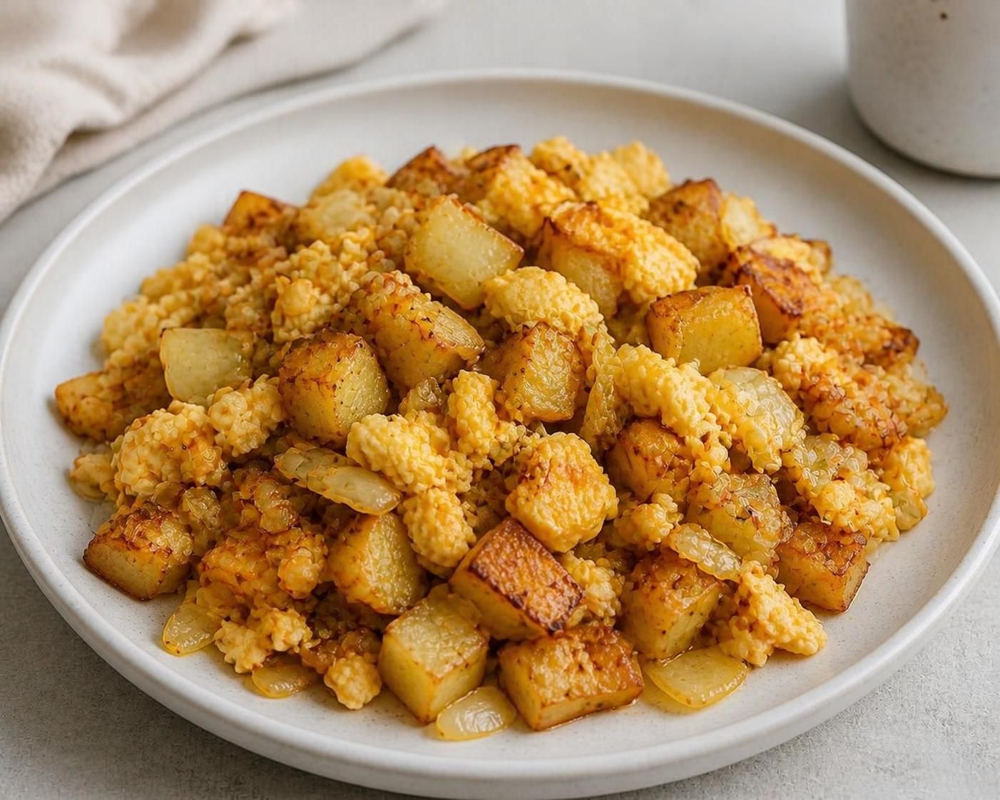

Прості страви для студентського життя
Доступні продукти, зрозумілі рецепти й мінімум часу на приготування.
Переглянути рецепти
Сніданки

Вівсянка з бананом
10 хвЛегко
Інгредієнти
- Вівсяні пластівці - ½ склянки
- Молоко або вода - 1 склянка
- Банан - 1 шт.
Приготування
- Залийте пластівці молоком або водою.
- Варіть 5-7 хвилин, помішуючи.
- Додайте нарізаний банан.

Грінки з яйцем
15 хвЛегко
Інгредієнти
- Хліб - 2 скибки
- Яйця - 2 шт.
- Сіль і олія - за смаком
Приготування
- Збийте яйця із сіллю.
- Занурте хліб у яєчну суміш.
- Обсмажте з обох боків до золотистого кольору.
Обіди й вечері

Макарони з сиром
20 хвЛегко
Інгредієнти
- Макарони - 150 г
- Твердий сир - 50 г
- Сіль - за смаком
Приготування
- Відваріть макарони в підсоленій воді.
- Злийте воду та додайте натертий сир.
- Перемішайте й подавайте гарячими.

Гречка з яйцем
25 хвЛегко
Інгредієнти
- Гречка - 1 склянка
- Яйця - 2 шт.
- Вода - 2 склянки
Приготування
- Промийте гречку та залийте водою.
- Варіть на малому вогні до готовності.
- Окремо зваріть яйця, наріжте й додайте до гречки.

Картопля з цибулею та яйцем
30 хвСередньо
Інгредієнти
- Картопля - 3 шт.
- Цибуля - 1 шт.
- Яйце - 1 шт., олія та сіль
Приготування
- Наріжте картоплю та цибулю.
- Обсмажте картоплю до м’якості, додайте цибулю.
- Вбийте яйце, перемішайте й доведіть до готовності.

Рис з овочами
25 хвЛегко
Інгредієнти
- Рис - 1 склянка
- Заморожені овочі - 150 г
- Вода - 2 склянки, сіль
Приготування
- Промийте рис і залийте водою.
- Додайте овочі та сіль.
- Варіть на малому вогні до готовності рису.